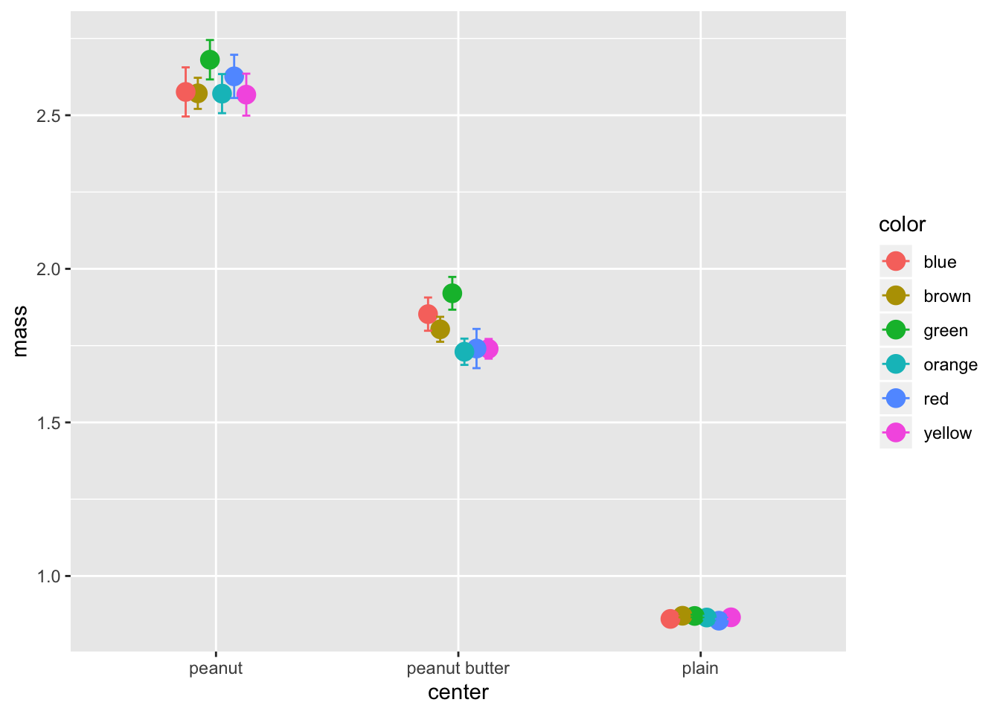
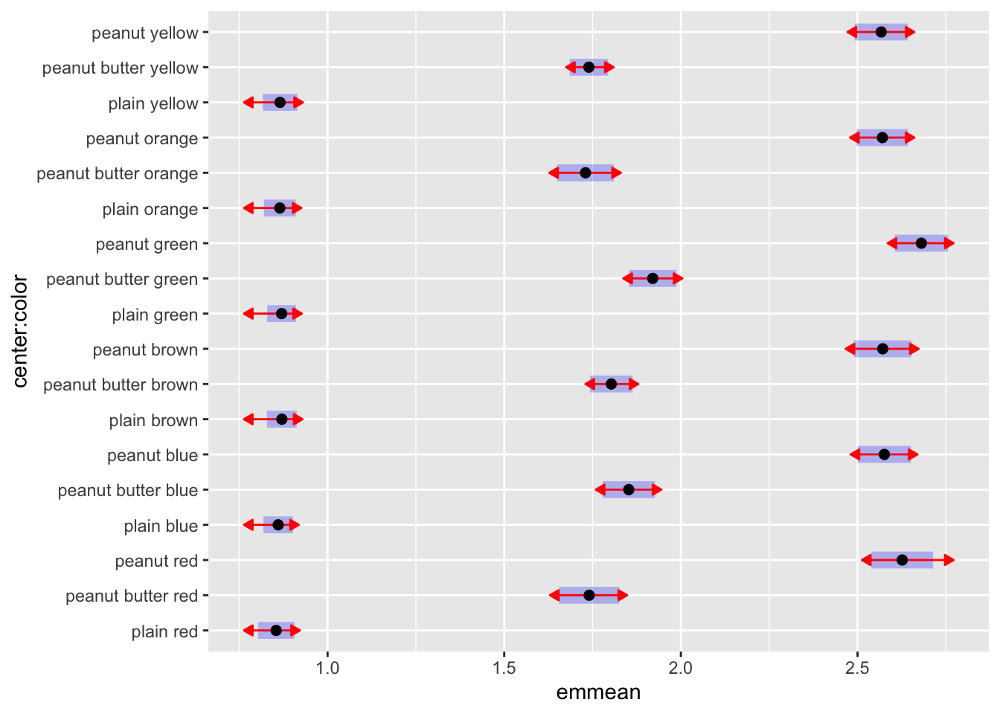
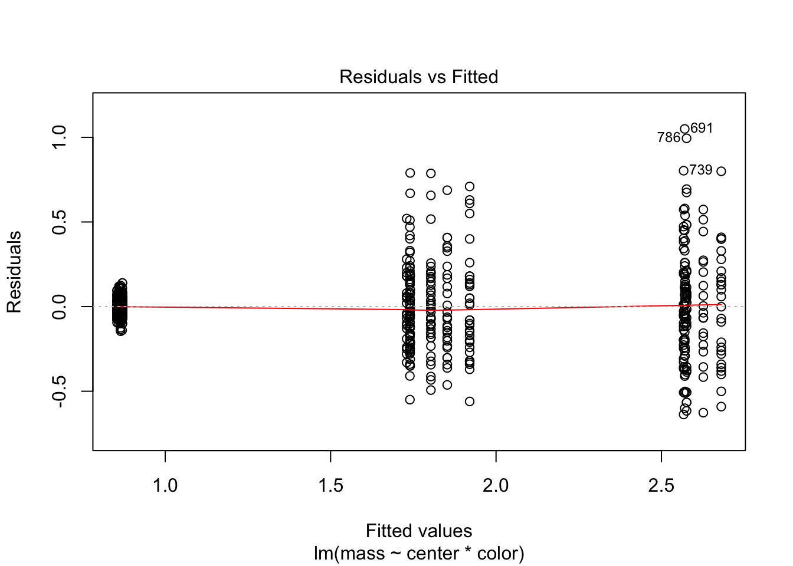
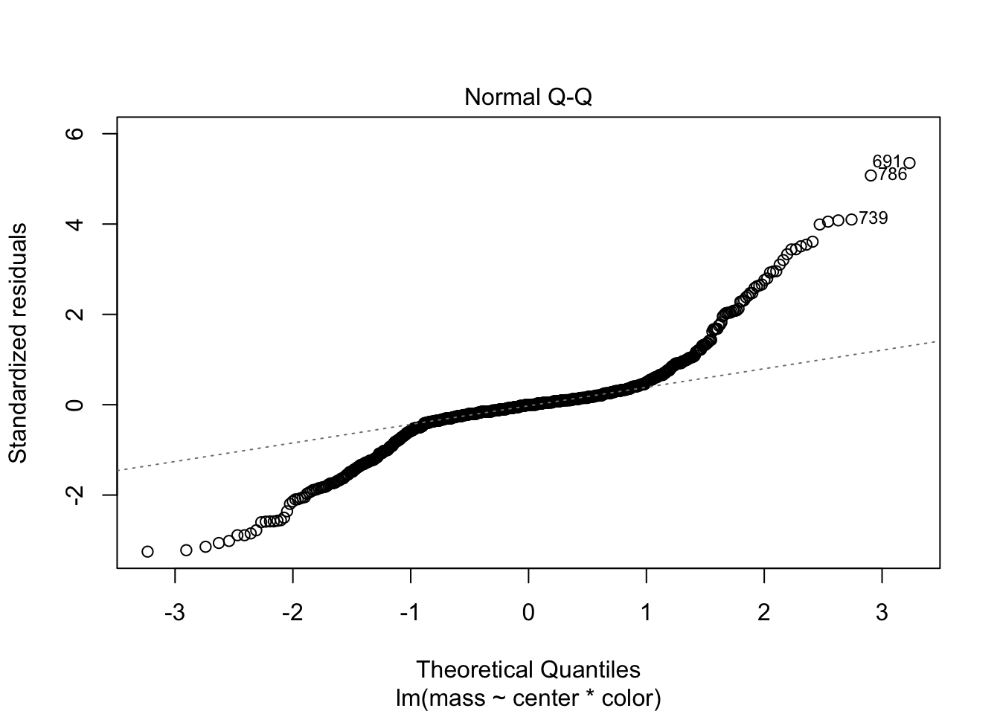
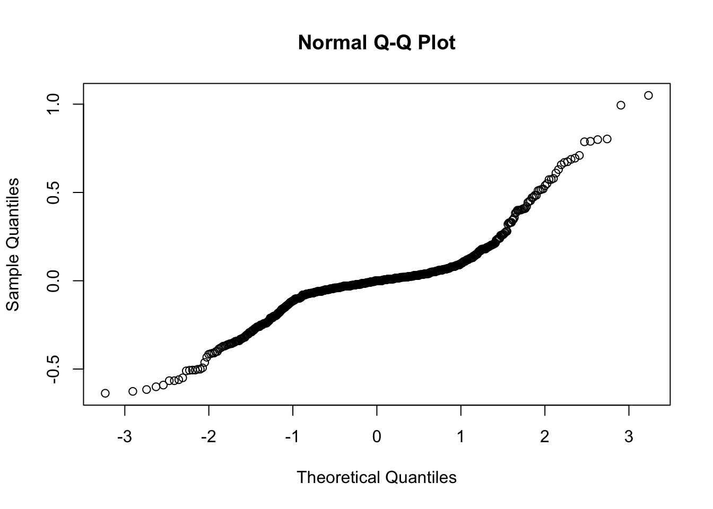

##Load libraries We will read in the main files and load the libraries as we have worked with so far.
# #Install Packages ----
# install.packages("tidyverse")
# install.packages("lubridate")
# install.packages("scales")
# install.packages("readxl")
# install.packages("survminer")
# install.packages("survival")
# install.packages("patchwork")
# install.packages("broom")
# ANOVA specific
# install.packages("car")
# install.packages("emmeans")
# install.packages("multcompView")
#Load libraries ----
library(tidyverse)
library(lubridate)
library(scales)
library(readxl)
library(skimr)
library(broom)
library(janitor)
# library(zoo)
library(patchwork)
library(car)
library(emmeans)
library(multcompView)The data for this project was downloaded from http://stat.pugetsound.edu/hoard/datasetDetails.aspx?id=1
This is a super fun data set in my opinion on m&m’s
# read file----
mm.df <- read_csv("data/mms.csv")## Parsed with column specification:
## cols(
## center = col_character(),
## color = col_character(),
## diameter = col_double(),
## mass = col_double()
## )mm.df %>%
ggplot(aes(center, color=color)) +
stat_summary(aes(y = mass ),
fun.y = mean,
geom = "point",
size = 4,
position = position_dodge(0.3),
na.rm = TRUE) +
stat_summary(aes(y = mass),
fun.data = mean_se,
geom = "errorbar",
width = 0.2,
position = position_dodge(0.3),
na.rm = TRUE) 
mm.df <- mm.df %>%
mutate(
center = as.factor(center),
color = as.factor(color)
)mm.df <- mm.df %>%
mutate(
center = fct_relevel(center,
"plain", "peanut butter", "peanut"),
color = fct_relevel(color,
"red", "blue", "brown", "green", "orange", "yellow" )
)# Set it up for Type III SS ANOVA
options(contrasts = c("contr.sum", "contr.poly"))# Fit the linear model and conduct ANOVA
model = lm(mass ~ center*color, data=mm.df)
Anova(model, type="III") # Use type="III" ALWAYS!!!!## Anova Table (Type III tests)
##
## Response: mass
## Sum Sq Df F value Pr(>F)
## (Intercept) 1928.03 1 48402.2077 < 0.00000000000000022 ***
## center 373.84 2 4692.5209 < 0.00000000000000022 ***
## color 0.81 5 4.0567 0.001214 **
## center:color 0.77 10 1.9239 0.038945 *
## Residuals 31.79 798
## ---
## Signif. codes: 0 '***' 0.001 '**' 0.01 '*' 0.05 '.' 0.1 ' ' 1# Post F test of interactions -----
model.emm <- emmeans(model, ~ center * color)# plot of comparisons
# blue are confidence intervals, red arrows overlap mean no significant diff
plot(model.emm, comparisons = TRUE)
# pairwise
emminteraction = emmeans(model,
pairwise ~ center:color,
adjust="bonferroni")
emminteraction$contrasts## contrast estimate SE df t.ratio
## plain,red - peanut butter,red -0.885993 0.0508 798 -17.431
## plain,red - peanut,red -1.772017 0.0518 798 -34.239
## plain,red - plain,blue -0.005747 0.0338 798 -0.170
## plain,red - peanut butter,blue -0.998017 0.0459 798 -21.730
## plain,red - peanut,blue -1.721443 0.0465 798 -37.022
## plain,red - plain,brown -0.016099 0.0339 798 -0.475
## plain,red - peanut butter,brown -0.948612 0.0404 798 -23.459
## plain,red - peanut,brown -1.716822 0.0492 798 -34.909
## plain,red - plain,green -0.015409 0.0335 798 -0.460
## plain,red - peanut butter,green -1.065811 0.0431 798 -24.724
## plain,red - peanut,green -1.826258 0.0465 798 -39.276
## plain,red - plain,orange -0.010317 0.0349 798 -0.296
## plain,red - peanut butter,orange -0.875517 0.0484 798 -18.074
## plain,red - peanut,orange -1.715862 0.0454 798 -37.802
## plain,red - plain,yellow -0.010986 0.0362 798 -0.304
## plain,red - peanut butter,yellow -0.885133 0.0381 798 -23.222
## plain,red - peanut,yellow -1.712554 0.0465 798 -36.830
## peanut butter,red - peanut,red -0.886024 0.0624 798 -14.209
## peanut butter,red - plain,blue 0.880246 0.0485 798 18.140
## peanut butter,red - peanut butter,blue -0.112024 0.0576 798 -1.944
## peanut butter,red - peanut,blue -0.835450 0.0581 798 -14.387
## peanut butter,red - plain,brown 0.869895 0.0486 798 17.906
## peanut butter,red - peanut butter,brown -0.062619 0.0533 798 -1.174
## peanut butter,red - peanut,brown -0.830828 0.0602 798 -13.792
## peanut butter,red - plain,green 0.870585 0.0483 798 18.036
## peanut butter,red - peanut butter,green -0.179818 0.0554 798 -3.246
## peanut butter,red - peanut,green -0.940265 0.0581 798 -16.192
## peanut butter,red - plain,orange 0.875676 0.0493 798 17.772
## peanut butter,red - peanut butter,orange 0.010476 0.0596 798 0.176
## peanut butter,red - peanut,orange -0.829869 0.0572 798 -14.511
## peanut butter,red - plain,yellow 0.875007 0.0502 798 17.433
## peanut butter,red - peanut butter,yellow 0.000861 0.0516 798 0.017
## peanut butter,red - peanut,yellow -0.826561 0.0581 798 -14.234
## peanut,red - plain,blue 1.766270 0.0495 798 35.687
## peanut,red - peanut butter,blue 0.774000 0.0584 798 13.246
## peanut,red - peanut,blue 0.050574 0.0589 798 0.859
## peanut,red - plain,brown 1.755919 0.0495 798 35.440
## peanut,red - peanut butter,brown 0.823405 0.0542 798 15.186
## peanut,red - peanut,brown 0.055196 0.0610 798 0.905
## peanut,red - plain,green 1.756609 0.0492 798 35.674
## peanut,red - peanut butter,green 0.706206 0.0562 798 12.556
## peanut,red - peanut,green -0.054241 0.0589 798 -0.921
## peanut,red - plain,orange 1.761700 0.0502 798 35.075
## peanut,red - peanut butter,orange 0.896500 0.0604 798 14.836
## peanut,red - peanut,orange 0.056155 0.0580 798 0.968
## peanut,red - plain,yellow 1.761031 0.0511 798 34.444
## peanut,red - peanut butter,yellow 0.886885 0.0525 798 16.889
## peanut,red - peanut,yellow 0.059463 0.0589 798 1.010
## plain,blue - peanut butter,blue -0.992270 0.0434 798 -22.882
## plain,blue - peanut,blue -1.715696 0.0440 798 -39.022
## plain,blue - plain,brown -0.010351 0.0303 798 -0.341
## plain,blue - peanut butter,brown -0.942865 0.0375 798 -25.143
## plain,blue - peanut,brown -1.711075 0.0468 798 -36.566
## plain,blue - plain,green -0.009661 0.0298 798 -0.324
## plain,blue - peanut butter,green -1.060064 0.0404 798 -26.261
## plain,blue - peanut,green -1.820511 0.0440 798 -41.406
## plain,blue - plain,orange -0.004570 0.0314 798 -0.145
## plain,blue - peanut butter,orange -0.869770 0.0460 798 -18.901
## plain,blue - peanut,orange -1.710115 0.0428 798 -39.961
## plain,blue - plain,yellow -0.005239 0.0329 798 -0.159
## plain,blue - peanut butter,yellow -0.879386 0.0350 798 -25.137
## plain,blue - peanut,yellow -1.706807 0.0440 798 -38.819
## peanut butter,blue - peanut,blue -0.723426 0.0538 798 -13.438
## peanut butter,blue - plain,brown 0.981919 0.0434 798 22.611
## peanut butter,blue - peanut butter,brown 0.049405 0.0487 798 1.015
## peanut butter,blue - peanut,brown -0.718804 0.0562 798 -12.798
## peanut butter,blue - plain,green 0.982609 0.0431 798 22.811
## peanut butter,blue - peanut butter,green -0.067794 0.0509 798 -1.331
## peanut butter,blue - peanut,green -0.828241 0.0538 798 -15.386
## peanut butter,blue - plain,orange 0.987700 0.0442 798 22.346
## peanut butter,blue - peanut butter,orange 0.122500 0.0555 798 2.206
## peanut butter,blue - peanut,orange -0.717845 0.0529 798 -13.575
## peanut butter,blue - plain,yellow 0.987031 0.0452 798 21.826
## peanut butter,blue - peanut butter,yellow 0.112885 0.0468 798 2.413
## peanut butter,blue - peanut,yellow -0.714537 0.0538 798 -13.273
## peanut,blue - plain,brown 1.705345 0.0440 798 38.733
## peanut,blue - peanut butter,brown 0.772831 0.0492 798 15.698
## peanut,blue - peanut,brown 0.004622 0.0566 798 0.082
## peanut,blue - plain,green 1.706035 0.0437 798 39.054
## peanut,blue - peanut butter,green 0.655632 0.0514 798 12.744
## peanut,blue - peanut,green -0.104815 0.0543 798 -1.930
## peanut,blue - plain,orange 1.711126 0.0448 798 38.201
## peanut,blue - peanut butter,orange 0.845926 0.0560 798 15.108
## peanut,blue - peanut,orange 0.005581 0.0534 798 0.105
## peanut,blue - plain,yellow 1.710457 0.0458 798 37.346
## peanut,blue - peanut butter,yellow 0.836310 0.0473 798 17.665
## peanut,blue - peanut,yellow 0.008889 0.0543 798 0.164
## plain,brown - peanut butter,brown -0.932514 0.0376 798 -24.820
## plain,brown - peanut,brown -1.700723 0.0469 798 -36.300
## plain,brown - plain,green 0.000690 0.0299 798 0.023
## plain,brown - peanut butter,green -1.049713 0.0404 798 -25.962
## plain,brown - peanut,green -1.810159 0.0440 798 -41.114
## plain,brown - plain,orange 0.005781 0.0315 798 0.183
## plain,brown - peanut butter,orange -0.859419 0.0461 798 -18.653
## plain,brown - peanut,orange -1.699763 0.0429 798 -39.661
## plain,brown - plain,yellow 0.005113 0.0329 798 0.155
## plain,brown - peanut butter,yellow -0.869034 0.0351 798 -24.787
## plain,brown - peanut,yellow -1.696456 0.0440 798 -38.531
## peanut butter,brown - peanut,brown -0.768209 0.0518 798 -14.838
## peanut butter,brown - plain,green 0.933204 0.0372 798 25.108
## peanut butter,brown - peanut butter,green -0.117199 0.0460 798 -2.545
## peanut butter,brown - peanut,green -0.877645 0.0492 798 -17.827
## peanut butter,brown - plain,orange 0.938295 0.0385 798 24.394
## peanut butter,brown - peanut butter,orange 0.073095 0.0511 798 1.431
## peanut butter,brown - peanut,orange -0.767250 0.0482 798 -15.922
## peanut butter,brown - plain,yellow 0.937627 0.0396 798 23.657
## peanut butter,brown - peanut butter,yellow 0.063480 0.0414 798 1.533
## peanut butter,brown - peanut,yellow -0.763942 0.0492 798 -15.517
## peanut,brown - plain,green 1.701413 0.0465 798 36.567
## peanut,brown - peanut butter,green 0.651010 0.0539 798 12.082
## peanut,brown - peanut,green -0.109436 0.0566 798 -1.932
## peanut,brown - plain,orange 1.706504 0.0476 798 35.873
## peanut,brown - peanut butter,orange 0.841304 0.0582 798 14.446
## peanut,brown - peanut,orange 0.000959 0.0557 798 0.017
## peanut,brown - plain,yellow 1.705836 0.0485 798 35.157
## peanut,brown - peanut butter,yellow 0.831689 0.0500 798 16.641
## peanut,brown - peanut,yellow 0.004267 0.0566 798 0.075
## plain,green - peanut butter,green -1.050403 0.0401 798 -26.223
## plain,green - peanut,green -1.810849 0.0437 798 -41.453
## plain,green - plain,orange 0.005091 0.0310 798 0.164
## plain,green - peanut butter,orange -0.860109 0.0457 798 -18.802
## plain,green - peanut,orange -1.700454 0.0425 798 -40.007
## plain,green - plain,yellow 0.004423 0.0325 798 0.136
## plain,green - peanut butter,yellow -0.869724 0.0346 798 -25.117
## plain,green - peanut,yellow -1.697146 0.0437 798 -38.851
## peanut butter,green - peanut,green -0.760447 0.0514 798 -14.781
## peanut butter,green - plain,orange 1.055494 0.0413 798 25.579
## peanut butter,green - peanut butter,orange 0.190294 0.0532 798 3.576
## peanut butter,green - peanut,orange -0.650051 0.0504 798 -12.885
## peanut butter,green - plain,yellow 1.054825 0.0424 798 24.904
## peanut butter,green - peanut butter,yellow 0.180679 0.0440 798 4.105
## peanut butter,green - peanut,yellow -0.646743 0.0514 798 -12.571
## peanut,green - plain,orange 1.815941 0.0448 798 40.541
## peanut,green - peanut butter,orange 0.950741 0.0560 798 16.980
## peanut,green - peanut,orange 0.110396 0.0534 798 2.068
## peanut,green - plain,yellow 1.815272 0.0458 798 39.634
## peanut,green - peanut butter,yellow 0.941125 0.0473 798 19.879
## peanut,green - peanut,yellow 0.113704 0.0543 798 2.093
## plain,orange - peanut butter,orange -0.865200 0.0468 798 -18.485
## plain,orange - peanut,orange -1.705545 0.0436 798 -39.080
## plain,orange - plain,yellow -0.000669 0.0340 798 -0.020
## plain,orange - peanut butter,yellow -0.874815 0.0360 798 -24.290
## plain,orange - peanut,yellow -1.702237 0.0448 798 -38.002
## peanut butter,orange - peanut,orange -0.840345 0.0551 798 -15.258
## peanut butter,orange - plain,yellow 0.864531 0.0478 798 18.097
## peanut butter,orange - peanut butter,yellow -0.009615 0.0493 798 -0.195
## peanut butter,orange - peanut,yellow -0.837037 0.0560 798 -14.949
## peanut,orange - plain,yellow 1.704876 0.0447 798 38.161
## peanut,orange - peanut butter,yellow 0.830729 0.0463 798 17.959
## peanut,orange - peanut,yellow 0.003308 0.0534 798 0.062
## plain,yellow - peanut butter,yellow -0.874147 0.0373 798 -23.460
## plain,yellow - peanut,yellow -1.701568 0.0458 798 -37.152
## peanut butter,yellow - peanut,yellow -0.827422 0.0473 798 -17.477
## p.value
## <.0001
## <.0001
## 1.0000
## <.0001
## <.0001
## 1.0000
## <.0001
## <.0001
## 1.0000
## <.0001
## <.0001
## 1.0000
## <.0001
## <.0001
## 1.0000
## <.0001
## <.0001
## <.0001
## <.0001
## 1.0000
## <.0001
## <.0001
## 1.0000
## <.0001
## <.0001
## 0.1864
## <.0001
## <.0001
## 1.0000
## <.0001
## <.0001
## 1.0000
## <.0001
## <.0001
## <.0001
## 1.0000
## <.0001
## <.0001
## 1.0000
## <.0001
## <.0001
## 1.0000
## <.0001
## <.0001
## 1.0000
## <.0001
## <.0001
## 1.0000
## <.0001
## <.0001
## 1.0000
## <.0001
## <.0001
## 1.0000
## <.0001
## <.0001
## 1.0000
## <.0001
## <.0001
## 1.0000
## <.0001
## <.0001
## <.0001
## <.0001
## 1.0000
## <.0001
## <.0001
## 1.0000
## <.0001
## <.0001
## 1.0000
## <.0001
## <.0001
## 1.0000
## <.0001
## <.0001
## <.0001
## 1.0000
## <.0001
## <.0001
## 1.0000
## <.0001
## <.0001
## 1.0000
## <.0001
## <.0001
## 1.0000
## <.0001
## <.0001
## 1.0000
## <.0001
## <.0001
## 1.0000
## <.0001
## <.0001
## 1.0000
## <.0001
## <.0001
## <.0001
## <.0001
## 1.0000
## <.0001
## <.0001
## 1.0000
## <.0001
## <.0001
## 1.0000
## <.0001
## <.0001
## <.0001
## 1.0000
## <.0001
## <.0001
## 1.0000
## <.0001
## <.0001
## 1.0000
## <.0001
## <.0001
## 1.0000
## <.0001
## <.0001
## 1.0000
## <.0001
## <.0001
## <.0001
## <.0001
## 0.0565
## <.0001
## <.0001
## 0.0068
## <.0001
## <.0001
## <.0001
## 1.0000
## <.0001
## <.0001
## 1.0000
## <.0001
## <.0001
## 1.0000
## <.0001
## <.0001
## <.0001
## <.0001
## 1.0000
## <.0001
## <.0001
## <.0001
## 1.0000
## <.0001
## <.0001
## <.0001
##
## P value adjustment: bonferroni method for 153 tests# # CLD
multcomp::cld(model.emm,
Letters = letters,
adjust="bonferroni") # can be bonferroni- as well## center color emmean SE df lower.CL upper.CL .group
## plain red 0.854 0.0262 798 0.776 0.933 a
## plain blue 0.860 0.0214 798 0.796 0.924 a
## plain orange 0.865 0.0230 798 0.796 0.934 a
## plain yellow 0.865 0.0249 798 0.791 0.940 a
## plain green 0.870 0.0208 798 0.807 0.932 a
## plain brown 0.871 0.0215 798 0.806 0.935 a
## peanut butter orange 1.730 0.0407 798 1.608 1.852 bc
## peanut butter yellow 1.740 0.0277 798 1.657 1.823 b
## peanut butter red 1.740 0.0436 798 1.610 1.871 bc
## peanut butter brown 1.803 0.0308 798 1.711 1.896 bc
## peanut butter blue 1.853 0.0377 798 1.739 1.966 bc
## peanut butter green 1.920 0.0342 798 1.818 2.023 c
## peanut yellow 2.567 0.0384 798 2.452 2.682 d
## peanut orange 2.570 0.0371 798 2.459 2.682 d
## peanut brown 2.571 0.0416 798 2.446 2.696 d
## peanut blue 2.576 0.0384 798 2.461 2.691 d
## peanut red 2.627 0.0446 798 2.493 2.760 d
## peanut green 2.681 0.0384 798 2.565 2.796 d
##
## Confidence level used: 0.95
## Conf-level adjustment: bonferroni method for 18 estimates
## P value adjustment: bonferroni method for 153 tests
## significance level used: alpha = 0.05# assumptions ----
# Homogeneity of variance----
# 1. Homogeneity of variances-----
plot(model, 1)
# Levene test homogeneity of variance ----
leveneTest(mass ~ center*color, data=mm.df)## Levene's Test for Homogeneity of Variance (center = median)
## Df F value Pr(>F)
## group 17 28.574 < 0.00000000000000022 ***
## 798
## ---
## Signif. codes: 0 '***' 0.001 '**' 0.01 '*' 0.05 '.' 0.1 ' ' 1#Normality of residuals------
plot(model, 2)
# Normality of resituals qqnorm-----
qqnorm(model$res)
# Shapiro test ----
shapiro.test(model$res)##
## Shapiro-Wilk normality test
##
## data: model$res
## W = 0.87257, p-value < 0.00000000000000022